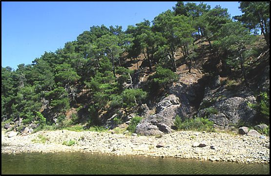Η περιοχή καταλαμβάνεται από μεγάλης έκτασης ημιορεινά δάση, στα οποία κυριαρχούν τα πεύκα. Εδώ βρίσκεται ένα από τα μεγαλύτερα πευκοδάση της Θράκης.
Τα πευκοδάση αποτελούνται από τα είδη, Τραχεία πεύκη (Pinus brutia) και Μαύρη πεύκη (Pinus nigra), τα οποία συγκροτούν το μεγαλύτερο μέρος της περιοχής με αμιγείς συστάδες ή μικτές με τα δύο είδη πεύκων αλλά και με φυλλοβόλες δρυς. Το κυρίαρχο είδος είναι η Τραχεία πεύκη, ενώ η Μαύρη πεύκη, εκτός από κάποιες μικρές αμιγείς συστάδες, εμφανίζεται κυρίως σε μίξη κατ’ άτομο ή μικρές ομάδες με Τραχεία πεύκη και δρυς, συνήθως σε βόρειες εκθέσεις και μέσα σε ρέματα. Σε πολλές περιοχές ή έντονη παρουσία των δρυών στο μεσόροφο και ανώροφο άρχισε να προκαλεί τη διάσπαση του πευκοδάσους. Τον υπόροφο των πευκοδασών συγκροτούν διάφορα φυλλοβόλα και αείφυλλα πλατύφυλλα είδη καθώς και νεαρά πεύκα και άρκευθοι. Σε βόρειες εκθέσεις και βαθειά εδάφη κυριαρχούν φυλλοβόλα είδη: Ανατολικός γαύρος (Carpinus orientalis), Όρνος φράξος (Fraxinus ornus) και κύρια οι δρύες (Quercus sp). Αντίθετα πάνω σε αβαθή άγονα εδάφη και νότιες εκθέσεις κυριαρχούν τα αείφυλλα είδη: Φυλλίκι (Phillyrea latifolia), Ρείκι (Erica arborea) και ο Οξύκεδρος άρκευθος (Juniperus oxycedrus). Σε ανοικτά πευκοδάση στην περιοχή του μεγάλου πυρήνα, εκτός από τα τελευταία είδη, εμφανίζεται κατά θέσεις και η Δαφνολαδανιά (Cistus laurifolius), σπάνιο για την Ελλάδα είδος που συναντάμε μόνο στα δάση της Θράκης.
Τα δρυοδάση καταλαμβάνουν μικρότερη έκταση και εμφανίζονται 4 είδη φυλλοβόλων δρυών: η Πλατύφυλλη δρυς (Quercus frainetto), η Ευθύφλοιος δρυς (Quercus cerris), η Απόδισκη δρυς (Quercus dalechampii) και η Χνοώδης δρυς(Quercus pubescens). Στην ευρύτερη περιοχή σε βαθειά πεδινά εδάφη υπάρχουν διάσπαρτα άτομα από Βαλανιδιές (Quercus aegilops var. macrolepis). Στο μεγαλύτερο μέρος των δρυοδασών σε καλά εδάφη πάνω σε μεταμορφωμένα και ιζηματογενή πετρώματα κυριαρχεί η πλατύφυλλη δρύς. Η Ευθύφλοιος δρύς χαρακτηρίζει πιο ηπειρωτικές όψεις στην ανώτερη υψομετρικά ζώνη της περιοχής και συγκροτεί, κυρίως σε δροσερές θέσεις και κοντά σε ρέματα, μικτές κατ’ άτομο ή συνδενδρίες συστάδες με την Πλατύφυλλο και Απόδισκο δρύ. Η Απόδισκη δρύς αποφεύγει τα βαρειά συνεκτικά εδάφη και τα πολύ υγρά και ξηρά περιβάλλοντα. Η Χνοώδης δρύς εμφανίζεται σε μεγαλύτερο βαθμό σε ξερές και θερμές θέσεις κυρίως σε νότιες εκθέσεις και πάνω σε διαβρωμένα εδάφη συχνά σε μίξη με Τραχεία και Μαύρη πεύκη. Η παρουσία της σε εδάφη από μεταμορφωμένα πετρώματα μαζί με την Πλατύφυλλη δρύ είναι συχνά συνάρτηση της έκθεσης.
Τα αείφυλλα πλατύφυλλα εμφανίζονται κατά θέσεις σε υποβαθμισμένα εδάφη σε μεγαλύτερη έκταση στην περιφέρεια της κοινότητας Λευκίμης. Συγκροτούνται από Φυλλίκι (Phillyrea latifolia), Γλιστροκουμαριά (Arbutus andrachne), Ρείκι (Erica arborea) και Σφακομηλόφυλλη λαδανιά (Cistus salviaefolius). Σε μη πυριτικά εδάφη από ιζηματογενή πετρώματα εμφανίζεται ακόμη το Χαμορείκι (Εrica manipuliflora), η Εριώδης λαδανιά (Cistus incanus) και η Κοκκορεβιθιά (Pistacia terebinthus). Στη σύνθεση των αειφύλλων πλατυφύλλων συμμετέχουν ακόμη ο Οξύκεδρος άρκευθος, είδη της οικογένειας Rosaceae (Pirus sp., Malus sp., Rosa sp. κλπ) και διάφορα φυλλοβόλα πλατύφυλλα είδη που βρίσκουμε στα πευκοδάση και δρυοδάση της περιοχής.
Η ρεματική βλάστηση στην περιοχή, χαρακτηρίζεται από την παρουσία της Κολλώδους κλήθρας ή Σκλήθρου (Alnus glutinosa) και συνδέεται με την παρουσία στην περιοχή μη ασβεστολιθικών εδαφών και ρεμάτων με θέσεις με μόνιμα νερά. Κατά θέσεις πάνω σε αμμώδεις αποθέσεις των κοιτών των ρεμάτων κυριαρχούν ιτιές (Salix sp.) και σε περιοδικά κατακλυζόμενα εδάφη αλμυρίκια (Tamarix sp.) και λεύκες (Populus sp.). Πέρα από αυτά τα είδη, στη σύνθεση της ρεματικής βλάστησης συμμετέχουν και πολλά άλλα πλατύφυλλα της περιοχής.
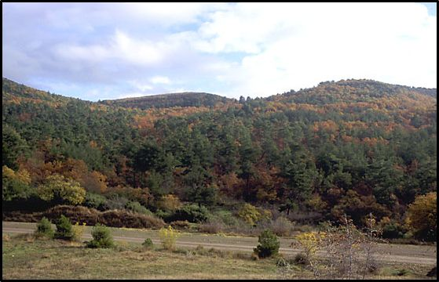
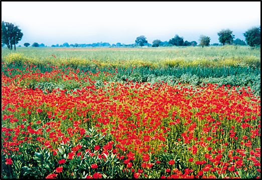Στην περιοχή Δαδιάς οι κυριότεροι βιότοποι είναι οι παρακάτω:
Δάση πεύκης ή δρυός (τα οποία περιγράφονται αναλυτικά παραπάνω)
Χέρσες εκτάσεις (Οι λιβαδικές εκτάσεις είναι διασπαρμένες σε όλη την περιοχή, αλλά το μεγαλύτερο ποσοστό βρίσκεται στο νότιο τμήμα. Πέρα από αυτές τις εκτάσεις, σημαντική είναι και η παρουσία πολλών ανοιγμάτων μέσα στο δάσος, που συνολικά καταλαμβάνουν μια μεγάλη έκταση και είναι διασπαρμένα ομοιογενώς σε όλη την έκταση.)
Βραχότοποι (Στην περιοχή υπάρχουν πολλές βραχώδεις εκτάσεις, ιδιαίτερα στις περιοχές αυστηρής προστασίας. Εμφανίζονται τόσο μεγάλες ορθοπλαγιές, όσο και μεμονωμένα βράχια μικρού ή και μεγάλου ύψους, δημιουργώντας μια σημαντική ποικιλία στο τοπίο και σπουδαίους βιότοπους για πολλά είδη χλωρίδας και πανίδας.)
Καλλιέργειες (Οι γεωργικές καλλιέργειες συγκεντρώνονται κατά κύριο λόγο σε συνεχείς εκτάσεις στην ανατολική περιοχή, όπου το ομαλό ανάγλυφο και οι μικρές κλίσεις σε συνδυασμό με τα βαθιά εδάφη από ιζηματογενή πετρώματα τις καθιστούν κατάλληλες για τη γεωργία. Από το σύνολο των καλλιεργειών μόνο ένα ποσοστό περίπου 6%, παραπλεύρως των κεντρικών κοιτών των ρεμάτων, αποτελεί εκτάσεις που αρδεύονται με αρτεσιανά ή επιφανειακά νερά. Διάφορα διάσπαρτα αγροτεμάχια υπάρχουν στο σύνολο της περιοχής, σε θέσεις με ήπια κλίση. Τα περισσότερα αγροτεμάχια είναι ιδιοκτησίες μικρής έκτασης και στις περιοχές που δεν έχουν γίνει αναδασμοί, χωρίζονται μεταξύ τους με φυτοφράκτες από διάφορα δασικά είδη καθώς και από δασοτεμάχια.)
Μερικώς δασοσκεπείς εκτάσεις (Στην περιοχή εμφανίζεται σε μεγάλο ποσοστό μία μορφή βιοτόπου που χαρακτηρίζεται ως μερικώς δασοσκεπείς εκτάσεις. Οι εκτάσεις αυτές περιέχουν σε μεγάλη αναλογία δασοσκεπείς θέσεις σε ποσοστό μέχρι 40% και χαρακτηρίζονται από έντονη εναλλαγή ανοιγμάτων και δασικών δέντρων σε όλη την έκταση τους. Οι εκτάσεις αυτές παίζουν καθοριστικό ρόλο στη διαβίωση της ερπετοπανίδας, των θηλαστικών και των αρπακτικών της περιοχής.)
Οικότονοι (Οικότονοι στην περιοχή εμφανίζονται κυρίως από την παρουσία διαφόρων νησίδων δάσους ανάμεσα σε καλλιέργειες, ή εξαιτίας της παρουσίας μικρών αγροτεμαχίων μέσα στα δάση. Ο συνδυασμός των δύο αυτών καταστάσεων (καλλιέργεια & δάσος) δημιουργεί αξιόλογους βιότοπους για πολλά είδη πανίδας.)
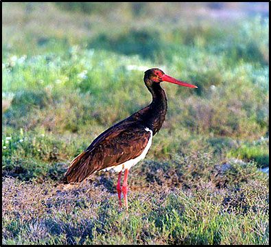Από την πανίδα του δάσους Δαδιάς, τα πουλιά παρουσιάζουν αναμφίβολα το μεγαλύτερο ενδιαφέρον. Στην έκταση της περιφερειακής ζώνης έχουν καταγραφεί είδη του πυκνού και ώριμου δάσους μαζί με πουλιά των θαμνοτόπων, των φυτοφρακτών και των κρασπέδων του δάσους, όπως και είδη των βραχωδών εκτάσεων. Χάρις στις ιδιαίτερες κλιματικές συνθήκες της Θράκης, βρίσκονται στην περιοχή μελέτης όχι μόνο τα τυπικά είδη των χαμηλού υψομέτρου δασών και της μακκίας, αλλά και είδη που είναι συνδεδεμένα με βιοτόπους μεγαλύτερου υψομέτρου στην υπόλοιπη Ελλάδα. Η μεγάλη ποικιλία ειδών ορνιθοπανίδας που ζουν στα δάση του Εβρου είναι ο καλύτερος δείκτης της ποιότητας και της γενικής αξίας των οικοσυστημάτων της περιοχής μας.
Στην περιοχή μελέτης συναντώνται 219 διαφορετικά είδη πουλιών, ανάμεσα στα οποία πολλά σπάνια και μοναδικά στην Ελλάδα είδη, όπως δρυοκολάπτες, Χαλκοκουρούνα, Ψαλτοτσιροβάκος, Παρδαλοκεφαλάς, Αμμοπετροκλής κ.α. (Παράρτημα ΠΑ 9.1). Περισσότερα από τα μισά είδη που έχουν καταγραφεί στην Ελλάδα, συναντιώνται στο σύμπλεγμα Δαδιάς-Λευκίμμης ή στη γύρω περιοχή. Εντυπωσιακή είναι η παρουσία 42 ειδών ημερόβιων και νυκτόβιων αρπακτικών σε σύγκριση με τα 47 είδη που ζουν στην Ελλάδα, ενώ ακόμα και στα Στρουθιόμορφα, στη Δαδιά συναντάται το 70% των ειδών της Ελλάδας. Ιδιαίτερα σημαντική είναι η ύπαρξη 28 ειδών μή στρουθιόμορφων πουλιών.
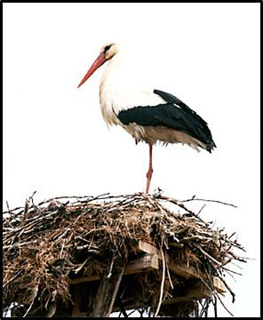
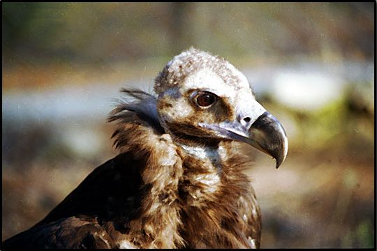Στην περιοχή μελέτης έχουν παρατηρηθεί συνολικά 36 από τα 38 ευρωπαϊκά ημερόβια αρπακτικά πουλιά. Από αυτά τα είδη μέχρι το 1970 αναπαράγονταν στην περιοχή 24 διαφορετικά είδη. Κατά την διάρκεια των τελευταίων δεκαετιών, τρία από τα παραπάνω είδη έπαψαν να φωλιάζουν. Η τελευταία αναπαραγωγή του Γυπαετού αναφέρθηκε στην περιοχή Σταυρός το 1969 και του Σπιζαετού στη μονή Δαδιάς το 1984. Επίσης άλλα δύο είδη έπαψαν να φωλιάζουν τα τελευταία χρόνια. Ο Θαλασσαετός σταμάτησε να φωλιάζει το 1990, μετακινούμενος νοτιότερα σε πευκοδάσος κοντά στο δέλτα του Έβρου, ενώ το ζευγάρι του Βασιλαετού εξαφανίστηκε το 1992, αλλά από το 2000 ένα νέο ζευγάρι έχει ξαναεπιστρέψει στην περιοχή. Το χειμώνα, 17 είδη ξεχειμωνιάζουν στην περιοχή, από τα οποία τα 3 είδη εμφανίζονται μόνο το χειμώνα και ανάμεσα σε αυτά ο Στικταετός με αξιόλογους πληθυσμούς. Επίσης αρκετά άτομα Θαλασσαετού, Βασιλαετού και Αετογερακίνας προερχόμενα από βορειότερες χώρες ξεχειμωνιάζουν στην περιοχή. Ορισμένα είδη, όπως ο Ψαραετός, περνάνε από την περιοχή μελέτης πολύ σπάνια και μόνο κατά την περίοδο της μετανάστευσης.
Οι πληθυσμοί πολλών ειδών αρπακτικών είναι πολύ μεγάλοι στην περιοχή μελέτης, αποτελώντας ένα σημαντικό τμήμα του ελληνικού πληθυσμού. Ιδιαίτερα σημαντικοί είναι οι πληθυσμοί του Κραυγαετού στον Έβρο (περίπου το 1/3 του συνολικού ελληνικού πληθυσμού), του Σταυραετού και της Αετογερακίνας. Η περιοχή όμως κατέχει μοναδική πια θέση στην Ελλάδα, με την ύπαρξη του τελευταίου αναπαραγόμενου ελληνικού ζευγαριού του Βασιλαετού, ενός από τα τρία τελευταία ζευγάρια του Θαλασσαετού και ολόκληρου του πληθυσμού του Μαυρόγυπα στη ΝΑ Ευρώπη. Οι πληθυσμοί των περισσότερων ειδών παρουσιάζουν μείωση τα τελευταία χρόνια (10 είδη), 2 είδη γυπών παρουσιάζουν αύξηση (Μαυρόγυπας και Όρνιο), ενώ άλλα 9 είδη παρουσιάζουν σταθερότητα πληθυσμού.
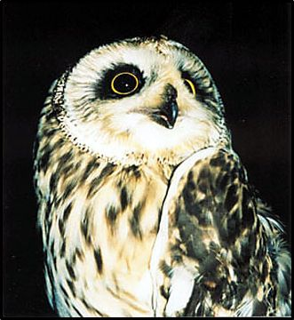
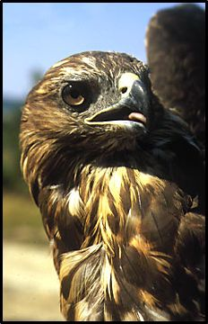
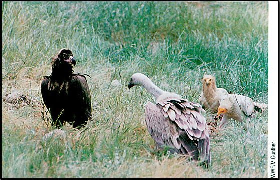
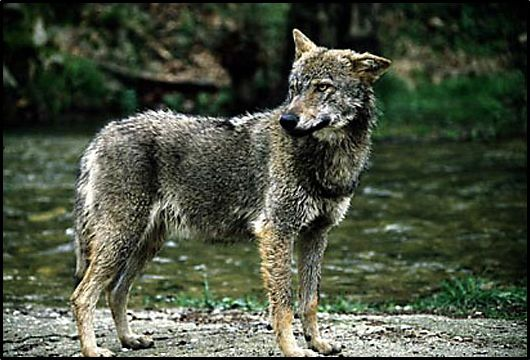Στην προστατευόμενη περιοχή υπάρχουν πάρα πολλά είδη θηλαστικών, ανάμεσα στα οποία μερικά με περιορισμένη κατανομή στην Ελλάδα, και εμφανιζόμενα κυρίως στην Ανατολική Μακεδονία και Θράκη. Τα περισσότερα μεγάλα θηλαστικά διαθέτουν μικρούς πληθυσμούς, λόγω έντονων ανθρώπινων πιέσεων (κυρίως λαθροθηρία), και αποτελούν μια ομάδα ειδών που απαιτεί την άμεση λήψη μέτρων προστασίας.
Τα μεγάλα σαρκοφάγα των ελληνικών δασών, τα οποία ήταν άφθονα στην περιοχή μελέτης μέχρι πριν το 1970, αρχίζουν να σπανίζουν. Ήδη ο Λύγκας έχει εξαφανιστεί, ενώ και η Αρκούδα πολύ σπάνια και πάντα μεμονωμένα κάνει πια την εμφάνισή της στις γύρω ορεινές ζώνες. Το Τσακάλι έχει σχεδόν εξαφανιστεί από τις περισσότερες πεδινές περιοχές και έχει περιοριστεί σε ορισμένες θέσεις στα νότια του Νομού Έβρου, με πολύ μικρή παρουσία στο δάσος Δαδιάς. Ο Λύκος εξακολουθεί να τριγυρνάει στην περιοχή σε μικρά κοπάδια των 2-3 ατόμων, αν και η παρουσία του είναι περιορισμένη.
Τα μεγάλα οπληφόρα, παρόλο που η ποικιλία βιοτόπων και η δομή της βλάστησης είναι ευνοϊκές για αυτά, εμφανίζουν πολύ χαμηλές πυκνότητες, λόγω έντονης λαθροθηρίας. Ιδιαίτερο πρόβλημα επιβίωσης αντιμετωπίζει το Ζαρκάδι, καθώς έχει εξαφανιστεί από πολλές περιοχές όπου άλλοτε αφθονούσε. Αντίθετα το Αγριογούρουνο εξακολουθεί να αφθονεί σε αρκετές περιοχές.
Όπως προκύπτει από το αντίστοιχο κεφάλαιο, μέσα στα όρια της προστατευόμενης περιοχής του δάσους της Δαδιάς υπάρχουν 9 είδη αμφιβίων και 23 είδη ερπετών. Ο αριθμός αυτός είναι πολύ μεγάλος για την έκταση της περιοχής μελέτης.
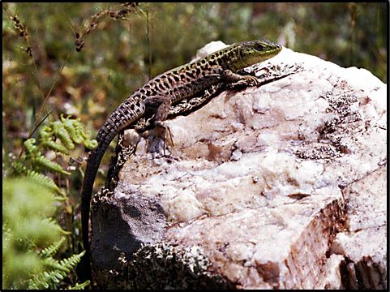
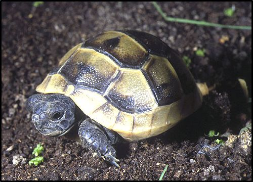